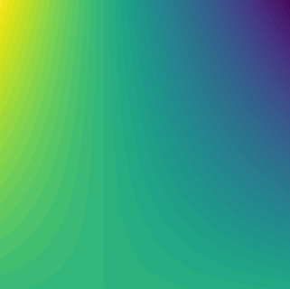

1a | Multivariate Analysis of Variance (MANOVA)
Aim: This project applies multivariate analysis of variance (MANOVA) to a set of data for binder jetting, assessing the influences of the independent variables on a pair of dependant variables.
Workflow: MANOVA is run iteratively to exclude any features or interactions that don't have a significant impact on the outcome. The regression is then assessed using statistical tests (such as Q-Q plots) and notable interactions visualised.
Outcome: Significant features and interactions are identified for each of the dependent variables, allowing for better informed decisions to be made in future experiments.